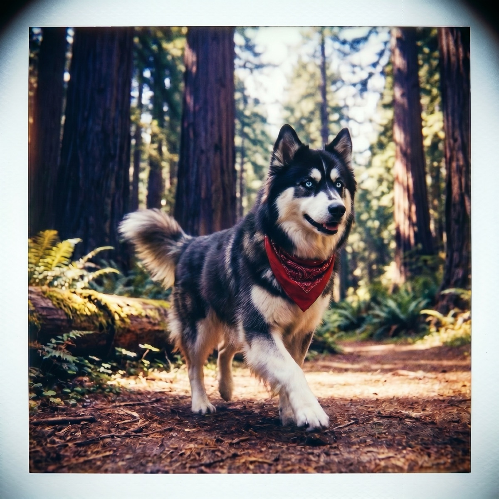

Fall Shedding in Dogs and Cats: Why It Happens, What Helps
Every autumn it starts: fur on the couch, fur on your black jeans, a small tumbleweed of fluff drifting down the hallway. Fall shedding is normal, it is predictable, and with the right routine it is very manageable. Here is what is actually going on under all that hair, and what genuinely helps.
Blame the daylight, not the temperature
The autumn coat blow is not your pet reacting to a chilly morning. It is driven mostly by photoperiod, the shrinking hours of daylight. As days get shorter, hormonal signals tell the body to drop the lighter summer coat and grow in a denser winter one. The American Kennel Club explains in its guide to managing dog shedding that seasonal shedders lose hair most heavily in spring and fall as light and temperature shift, while pets who live mostly indoors under artificial light often shed moderately all year instead of in two dramatic bursts.
Cats follow the same script. An indoor-outdoor cat will blow coat noticeably in fall, while a strictly indoor cat under lamps and central heat tends to shed a steady trickle year-round. Either way, autumn is when most households notice the fur situation escalating.
Double coats vs. single coats
How dramatic fall gets depends on what your pet is wearing. Double-coated breeds (huskies, German shepherds, golden retrievers, corgis, most spitz types, and plenty of cats too) have a soft, dense undercoat beneath longer guard hairs. That undercoat is the part that turns over seasonally, and when it lets go, it really lets go. The AKC's overview of double-coated dog breeds covers how that two-layer system insulates against both cold and heat.
Single-coated breeds like poodles, boxers, and greyhounds have no undercoat to blow, so their fall shedding is much milder. They still turn over hair, just without the snowdrift effect. If you share your home with a husky, you already know which camp you are in; our husky care guide covers the summer side of that famous coat.

Brushing: the cadence and tools that work
You cannot stop seasonal shedding, but you decide where the hair ends up: in a brush, or on everything you own. Match the tool to the coat.
- Double coats: an undercoat rake is the workhorse, with a slicker brush for finishing. During the fall blow, brush every other day, daily at the peak. Off-season, once or twice a week keeps things civil.
- Short single coats: a rubber curry brush or grooming mitt once or twice a week lifts dead hair and distributes skin oils.
- Long or silky coats: a pin brush plus a metal comb, several times a week, so loose hair does not turn into mats.
- Cats: short, frequent sessions win. A few minutes with a slicker or grooming glove most days beats a wrestling match once a month, and it cuts down on the hairballs that spike when cats groom out a heavy fall coat themselves.
Baths help too. A warm bath followed by a thorough blow-dry (for dogs who tolerate it) releases a huge amount of loose undercoat in one session. Just do not over-bathe, since stripping skin oils dries the coat out and can actually increase shedding.
Feed the coat
Hair is mostly protein, and a coat in seasonal turnover is a construction site. A complete, balanced diet does more for shedding than any brush. Omega-3 fatty acids (fish oil, or diets already enriched with EPA and DHA) support skin health and coat quality, which means less breakage and dull, flyaway fur. Ask your vet before adding a supplement so the dose fits your pet, but a healthy coat starts in the food bowl, not the grooming caddy.
When shedding is a symptom, not a season
Normal fall shedding is even, all-over hair loss with healthy skin underneath. It should not look patchy and it should not bother your pet. PetMD's vet-reviewed guide to excessive shedding in dogs flags the signs that hair loss has crossed into medical territory:
- Bald patches or visibly thinning areas
- Red, flaky, greasy, or scabby skin
- Constant scratching, licking, or chewing
- Hair that looks dull, dry, or broken
- A sudden change in shedding that does not match the season
Allergies, parasites, stress, poor diet, and hormonal conditions can all masquerade as "a lot of shedding." If any of the above shows up, book a vet visit rather than a grooming appointment.
Whatever you do, do not shave a double coat
It is tempting to solve the fur problem at the source. Resist. Shaving a double-coated dog or cat removes their insulation right before winter, exposes skin to sun and cold, and can permanently change how the coat grows back. The undercoat often returns faster than the guard hairs, leaving a fuzzy, patchy coat that insulates worse in every season. Brush it out instead; the coat knows what it is doing.
Let the season set your routine
Fall shedding is really just your pet reading the forecast a few weeks ahead of you: shorter days, winter coming, time to change outfits. A quick daily glance at conditions helps you keep pace, and WeatherPets makes that glance the best part of the morning, with your own pet delivering the forecast restyled for every condition as the season turns. If your shedder is one of the winter-ready breeds, see our roundup of dog breeds built for cold weather, or go season by season with our golden retriever seasonal care guide.